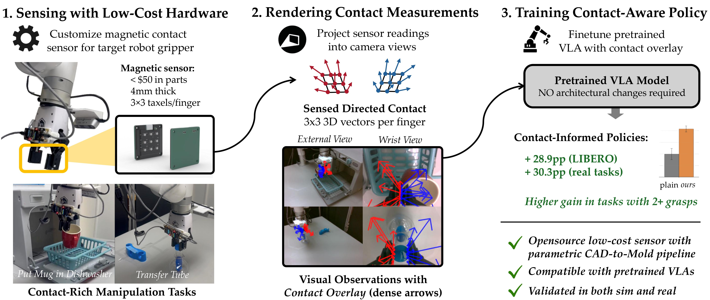
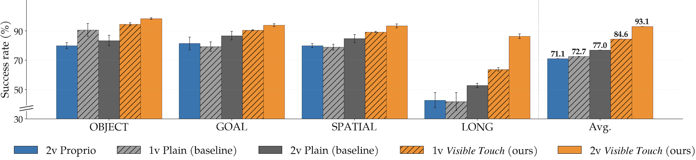
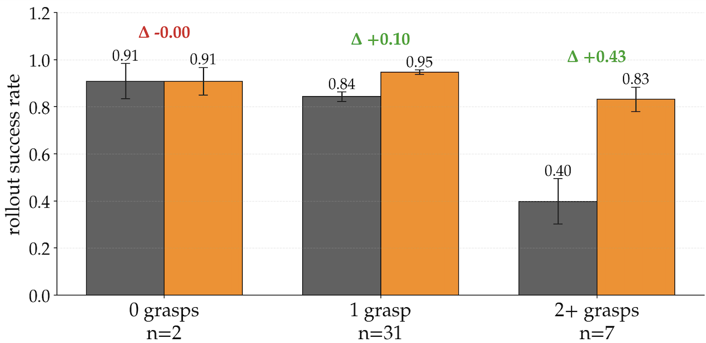
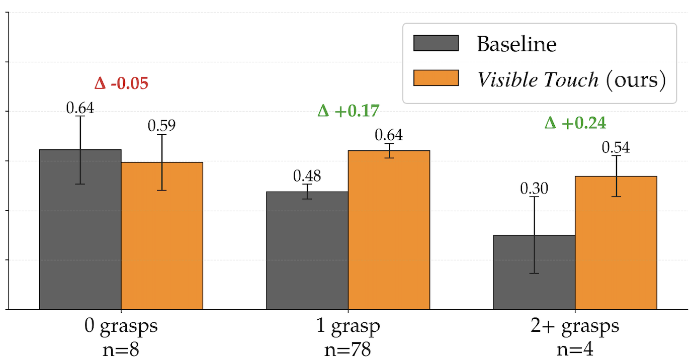
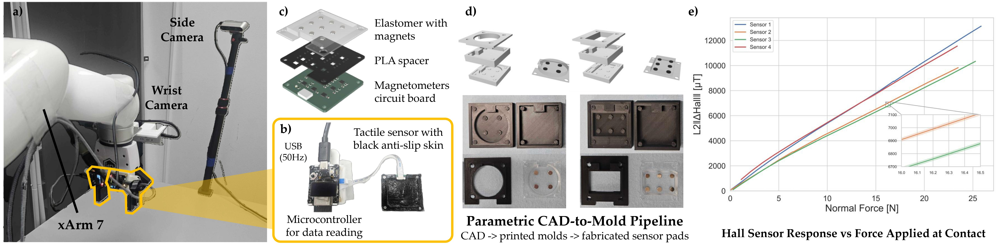

Visible Touch: Rendering Contact for Visuomotor Policies
Anonymous Author(s)
Submitted to CoRL 2026
Abstract
Integrating contact information into visuomotor policies remains an open problem. Touch
is essential to robust manipulation, yet most modern policies, including pretrained
vision-language-action (VLA) models, operate from vision and proprioception alone.
Existing approaches to closing this gap require specialized tactile hardware, add
separate tactile encoders, or commit to non-image policy backbones, all incompatible
with the modern paradigm of image-conditioned policies built on pretrained 2D visual
representations. Our key insight is that the bottleneck is not the contact information
itself, but how it is delivered: when contact signals are exposed in the same spatial
frame as the scene the policy already attends to, they become directly usable by any
image-conditioned policy without architectural changes. We operationalize this insight
in Visible Touch, paired with a custom low-cost magnetic contact sensor that is
open-sourced and fabricated from off-the-shelf parts via a parametric CAD-to-mold
pipeline. Across the LIBERO benchmark, Visible Touch improves BC-Transformer success
rates by 16 percentage points on average, with controlled comparisons showing that how
contact is represented matters more than what contact information is provided. The
pattern holds when fine-tuning pretrained VLAs: miniVLA on LIBERO gains 29 points on
average, and π0.5 on four real-world contact-rich tasks gains 30 points with our
custom sensor.
Method
Visible Touch renders tactile contact into the policy's existing RGB observation stream.
A low-cost magnetic tactile sensor or simulated contact source provides per-element
3-axis measurements. These measurements are projected into camera coordinates using
robot forward kinematics and calibrated camera parameters, then alpha-blended onto the
image as contact overlays. The result is a drop-in input augmentation for
image-conditioned policies, including pretrained VLAs.
The rendering pipeline does not require calibration to physical force units. It only
needs the sensor geometry, camera extrinsics, and a visual scale factor so typical
contact events are visible as arrows, markers, or bars. Because the augmented image
preserves the original image resolution, channel count, and pixel range, no additional
tactile encoder, state vector dimension, or policy architecture change is required.

Figure 1: Overview of Visible Touch. A low-cost magnetic contact sensor captures
per-taxel contact, which we render as an image-space overlay on the policy's RGB
observations. The augmented images are drop-in inputs for fine-tuning pretrained VLAs,
requiring no architectural changes. Contact overlays improve average task success by
+28.9% on LIBERO fine-tuning suites and +30.3% on real-world contact-rich manipulation
tasks.
Key Findings
Image-space contact improves BC-Transformer across camera settings.
In LIBERO simulation, Visible Touch improves over plain RGB baselines in both
1-view and 2-view settings. The main-paper summary shows a roughly 16-point
improvement in the 2-view setting, and the largest gain appears on LIBERO_LONG
(+33.7pp), where contact events are most diagnostic of task progress.

Figure 3: BC-Transformer on LIBERO across camera configurations (n=3 seeds, error
bars are std). Orange bars show Visible Touch (ours); gray bars show plain baselines;
blue bars show the Proprio baseline that receives identical contact information to
Visible Touch. Visible Touch consistently improves over plain images in both 1-view
and 2-view, with the largest gain on LIBERO_LONG (+33.7pp 2-view).
The same pattern transfers to miniVLA.
Overlay-pretrained miniVLA reaches 64.0% on LIBERO_90 versus 52.6% for the released
Stanford baseline. During suite-level fine-tuning, Visible Touch improves every suite
and raises the best-observed average from 50.9% to 79.8%.
Table 1: miniVLA success rates (%) on LIBERO across pretraining and fine-tuning.
Method
Pretraining
Fine-tuning (best-observed)
LIBERO_90
OBJECT
GOAL
SPATIAL
LONG
Avg.
Baseline
52.6%
51.0%
48.5%
71.5%
32.5%
50.9%
Visible Touch
64.0%
73.5%
80.5%
94.0%
71.0%
79.8%
Overlay benefits scale with grasp structure.
Gains are largest when tasks require multiple grasps or longer contact-rich
trajectories. In BC-Transformer, multi-grasp tasks show a +43.3pp improvement. The
same grasp-structure pattern appears in miniVLA on LIBERO_90.

(a) BC-Transformer on LIBERO suites (40 tasks).

(b) miniVLA on LIBERO_90 (90 tasks).
Figure 4: Success rates of Visible Touch (Avg. Arrow overlay) over plain baselines,
bucketed by gripper-close events. Tasks with no grasps show no benefit; single-grasp
tasks show modest gains; multi-grasp tasks show the largest gains. The pattern holds
across both BC-Transformer (a) and a pretrained miniVLA on LIBERO_90 (b).
Overlay granularity depends on the contact source.
In simulation, Avg. Arrow is the strongest overlay on average, while Binbars remains
competitive and Multi-arrows underperforms on LIBERO_LONG. This suggests that excess
spatial detail can introduce visual clutter when simulated contacts appear at
inconsistent mesh locations.
Table 2: Success rates (%) for overlay variants on LIBERO suites (BC-Transformer, 2-view, n=3 seeds).
Visible Touch variant
OBJECT
GOAL
SPATIAL
LONG
Avg.
Multi-arrows
94.3 ± 5.6
93.8 ± 0.5
90.2 ± 1.0
76.2 ± 2.7
88.6
Avg. Arrow
98.5 ± 0.5
94.0 ± 1.0
93.5 ± 1.3
86.5 ± 1.6
93.1
Binbars
98.3 ± 0.3
92.7 ± 0.7
94.5 ± 0.5
78.8 ± 2.6
91.1
Visible Touch transfers to real-world contact-rich manipulation.
On the xArm7 real-world setup, Multi-arrows is strongest on every reported sub-task.
It reaches 24/30 on Transfer Tube Pick and 16/30 on Transfer Tube Insert, compared
with 5/30 and 0/30 for the baseline. On Plug Charger, the hardest task, Multi-arrows
is the only condition that completes any inserts.
(a) Real-world tasks.(b) Variants of Visible Touch contact overlay.
Figure 5: Real-world experimental setup. (a) Contact-rich manipulation tasks: Lift,
Transfer Tube, Put Mug in Dishwasher, and Plug Charger. (b) Example contact overlays
rendered onto external and wrist camera views.
Table 3: Real-world evaluation of π0.5 fine-tuning across four contact-rich
manipulation tasks (30 trials per condition, sub-task scored). Tac-View renders the
same contact arrows as a separate image stream.
Method
Lift
Transfer Tube
Put Mug in Dishwasher
Plug Charger
Pick
Pick
Insert
Pull
Pick
Place
Pick
Insert
Baseline
20/30
5/30
0/30
21/30
11/30
11/30
9/30
0/30
Tac-View
16/30
9/30
0/30
22/30
18/30
16/30
17/30
0/30
Visible Touch: Binbars
23/30
10/30
1/30
24/30
15/30
15/30
9/30
0/30
Visible Touch: Avg. Arrow
23/30
17/30
3/30
23/30
14/30
12/30
13/30
0/30
Visible Touch: Multi-arrows
24/30
24/30
16/30
28/30
22/30
21/30
18/30
2/30
Hardware
The real-world experiments use a low-cost magnetic tactile sensor with a 3x3 taxel grid
per finger. Forces deform a silicone elastomer pad embedded with permanent magnets, and
a matching array of 3-axis magnetometers records the magnetic field changes at 50 Hz.
The sensor has a 4 mm profile and separates reusable electronics from the replaceable
elastomer contact pad.
A parametric CAD-to-mold pipeline generates multi-stage 3D-printable casting molds from
geometry and magnet-layout inputs. In the updated appendix, 397 of 400 collected
demonstrations pass the post-acceptance and idle-trim filters. Demonstration lengths
range from 13.1 seconds on cube to 28.1 seconds on dishwasher, with an across-task mean
of 21.0 seconds.

Figure 2: Hardware system. (a) Visuo-tactile setup: UFactory xArm7 with two RealSense
cameras and two tactile sensors mounted on the gripper fingers. (b) Custom tactile sensor
with anti-slip skin. (c) Internal structure of the tactile sensor. (d) Our parametric
CAD-to-mold pipeline: CAD-generated alternative casting molds (top) and the 3D-printed
molds with the fabricated sensor pads (bottom). (e) Physical characteristics of the
sensor.
Sample Policy Rollouts
The clips below show successful task rollouts and the corresponding contact-overlay
renderings used by Visible Touch. Overlay videos make the tactile signal visible in the
same RGB frame consumed by the policy.
Cube
Rollout Success
9-Arrow Overlay
Transfer Tube
Rollout Success
9-Arrow Overlay
Plug Charger
Rollout Success
9-Arrow Overlay
Put Mug in Dishwasher
Rollout Success
9-Arrow Overlay
1-Arrow Overlay
Binbar Overlay
Tac-View
Conclusion
Visible Touch renders contact information as image-space overlays on RGB observations,
requiring no architectural changes. Across LIBERO, image-space overlays improve
BC-Transformer success over plain images and a matched proprioceptive baseline. The
pattern transfers across architectures: miniVLA gains 29% on LIBERO fine-tuning, and
π0.5 gains 30% across four real-world contact-rich tasks. Visible Touch provides a
practical path for adding contact awareness to image-conditioned policies, including
pretrained VLAs.